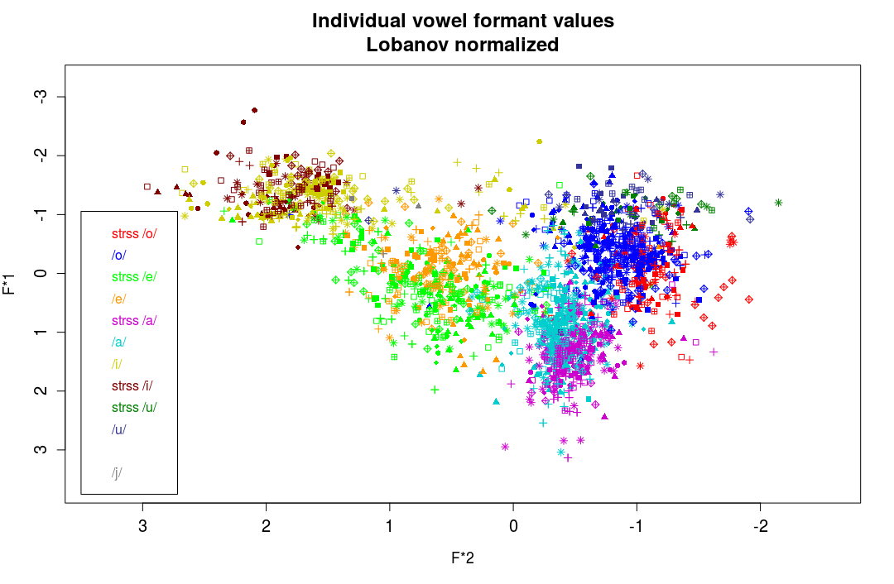

Andrew
Created: 2017-11-21 mar 13:14
Barese:
A Sociophonetic Analysis
Equipment
- Microphone Snowball
- PRAAT
- Matplotlib
- RStudio
Data Collection
- Wordlist
- Questionnaire
Questionnaire
Structure
- 16 questions on dialect use by the students
- 4 questions on dialect use by teachers
- 7 "Yes" or "No" questions
- 13 "Yes", "No" or "Sometimes" questions
Barese Variety vs. Barese Dialect
Barese Variety
A variety of Italian which has different phonosyntactic features and lexical items. Intelligibility across varieties is preserved.
Barese Dialect / Language
A language on its own with syntactic and phonological rules quite different from standard Italian. Intelligibility with nonspeakers is not preserved.
Vowels
Vowels Development
Barese Variety Phonetic Vowel Repertoire
[a] [ə] [ɛ] [e] [i] [o] [u]
Results
- [e] and [ɛ] are allophones, there may be a split taking place.
- Complete merger of [o] and [ɔ] in both stressed and unstressed position.
- [a] raised and centralized.
Vowel Plots

Vowel Plots
Apparent-Time Comparison
Student Informants
- Clearer differentiation between [e] and [ɛ]
- More [ə] tokens
- More centralization of both front vowels
- Consistent merger of [o]
Adult Informants
- Less differentiation between [e] and [ɛ]
- Avoid [ə]
- More careful in the production of front vowels
- Consistent merger of [o]
Sociolinguistic Analysis
Answers by men and women

Sentiment Approach
P Values
| 1 | 0.026 | 14 | 0.209 |
| 2 | 0.021 | 15 | 0.597 |
| 3 | 0.003 | 16 | 0.002 |
| 4 | 0.002 | 17 | 0.008 |
| 5 | 0.014 | 18 | 0.200 |
| 6 | 0.019 | 19 | 0.346 |
| 7 | 0.234 | 20 | 0.056 |
| 8 | 0.137 | ||
| 9 | 0.446 |
Results
- Boys and Girls answered similarly to questions 7-9, 14-15 and 18-19.
- Boys have a more positive attitude towards dialect than girls
Results
Boys spread their use of dialect across more registers than girls, using it to when fighting or chatting and not only to make jokes. They also use it more with parents.
Girls may bear the social stygma associated with dialect more than boys, since two of the informants report their parents telling them off for speaking Barese and that such a thing is not "lady-like"
Barese in the classroom
- More than 80% of questionnaire-takers report that teachers use dialect to make jokes
- Almost 60% of the students report that at least one teacher has forbid the use of Barese explicitly
- More than 40% report teachers using dialect as a teaching tool
As a teaching tool
Barese is used to break down complex ideas and be more "direct" in the explanation. \medskip
It is also used to lower the affective filter by lightening the mood in the class.
Integration
- 54% of the students claim dialect is not useful to integration.
- 60% of the students have taught some dialect to foreigners.
p = 0.04
This adds up to the fact that, even though dialect may be an important element in the school's social life, the stigmatization of Barese is real.
Interlect
the interlanguage that bilectal speakers of a dialect and a variety use to communicate in the target ``standard'' language, which produces what is usually called a variety.
Variety –> Standard Italian
Dialect –> Variety –> Standard Italian
Conclusion
- Boys and girls have very different attitudes towards dialect and its use.
- Girls use dialect in fewer contexts and registers than boys, they are more subject to the social stigma tied to Barese.
- Students generally try to teach some dialect to foreigners, even though they do not see it as a key factor in the integration process.
- Teachers should use dialect more as a didactic tool in order to help language revitalization and survival.